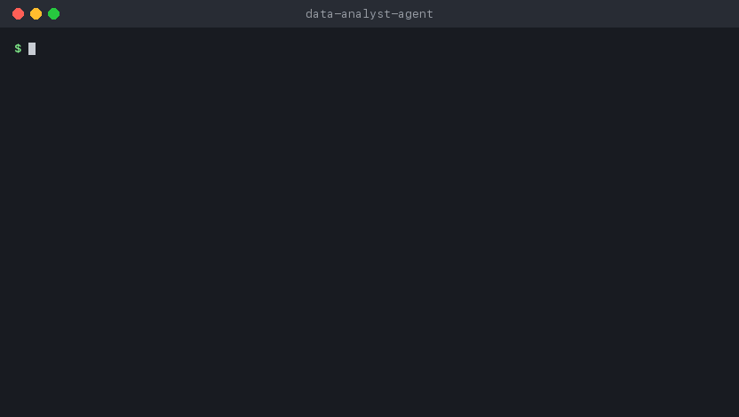

AI engineer. I build retrieval and agent systems — and I can tell you what each one costs per query.
Where a project answers questions, it's graded against figures computed from the data, so a score never rests on one model's opinion of another. I publish what I measured, including the runs that went against me and the bugs I found in my own answer keys.
Now
Working through a self-directed 24-week AI engineering program — transformers from scratch, then production RAG, agents, fine-tuning, and the MLOps around all of it. Everything ships to a public URL. Nothing stays in a notebook.
Background is CS plus an MS in Management of Technology, which mostly means I'm interested in the part most demos skip: whether the thing is worth running.
This month I’m backing each stage of the pipeline below with measured work on a live system. Next: routing each question to the cheapest model that answers it correctly, and retrieval against a whole filing held in a long context.
Pipeline
Nine stages of putting a model in front of users, and the project that covers each. A stage counts as done when it is measured on a running system, not when the code exists.
01In progressData and ground truthAnswers come from the XBRL figures companies file with the SEC. Next: a weekly refresh that keeps bad data from deploying.
02In progressRetrievalHybrid search over 10-K text, hit@5 0.762. Next: the same questions answered from a whole filing in a long context.
03In progressPrompting and model choiceAgent accuracy from 86 to 200 of 208, one fix at a time. Next: a router that sends each question to the cheapest model that gets it right.
04In progressFine-tuningQwen3-8B with LoRA reached 0.91 F1, against 0.98 for a prompted frontier model. Next: serve it and find the volume where it pays.
05DoneAgents and toolsedgar-intel’s tools are public over MCP. One command adds them to Claude Code, and each figure cites its filing.
06In progressEvaluationEvery project is graded against answers no model wrote, with a regression gate in CI. Next: grading answers from the live demos.
07In progressSafety and guardrailsA rulebook between an agent and its actions, and a prompt-injection bench over 1,872 runs. Next: a privacy filter for uploaded data.
08In progressServing and deploymentedgar-intel is live and deploys only when its tests and eval gate pass. Next: serving the fine-tuned model.
09In progressMonitoring and costTraces from the live API, and a measured cost per answer on every project. Next: dashboards for latency, cost and eval score over time.
Sep – Oct 2026 · retrieval, evaluation, agents, deployment
Search, question answering and a tool-calling agent over SEC 10-K filings. The evaluation set takes its answers from the XBRL figures companies file with the SEC, so a numeric answer is checked against what the company reported.
232
evaluation questions, 208 numeric and 24 narrative
24
10-K filings from 8 companies, FY2023–FY2026
200/208
numeric questions the agent answers correctly
κ 0.42
LLM judge agreement with my labels, below the 0.60 floor
Agent accuracy, one fix at a time
As first deployed86 / 208
Tool prints the citation id it registers148 / 208
Tools list the XBRL tags they hold173 / 208
Prompt states today’s date200 / 208
0208 numeric questions
Same question set and grader for every run, with each fix the only change from the run before it. Two identical runs differ by about 14 questions each way, so I wrote down predictions before each run. The agent reads figures from the same XBRL table the answer key comes from, so this measures lookups more than reading.
Found the agent escalating 48% of questions because a tool printed a citation id in a different form from the one it registered. The model cited what it read, the check rejected it, and the agent gave up while holding the right figure.
Built hybrid retrieval in Postgres: pgvector embeddings and full-text search, fused with reciprocal rank fusion. hit@5 0.762, MRR 0.555 on the 232-question set.
Found and fixed eight defects in the evaluation harness itself, including fiscal years taken from the filing instead of the period a figure covers, a 52/53-week year-end filed under the wrong year, and a grader that failed correct comparative answers.
Checked the LLM judge against 24 answers I labelled by hand. It agreed at κ 0.42, with 7 false positives and no false negatives, so the gate withheld a narrative pass rate of 79% that my labels put at 50%.
Compared four chunking strategies end to end. At the same 512-token ceiling, fixed, recursive and section-aware chunking tied within one question. Chunk size moved accuracy more than the strategy did.
Put it online. Every push to main runs the tests and an eval gate, and deploys only if both pass. A change that cut the passages sent to the model from 8 to 1 passed every unit test, and the gate kept it from deploying.
Published the agent’s tools over MCP. One command adds them to Claude Code, with no key and no database to set up, and every figure they return cites the filing it came from.
Oct 2026 · fine-tuning, evaluation · part of edgar-intel
Can a small open model fine-tuned on one task match a frontier model given four worked examples? The task: list the financial facts a 10-K passage states. Every label comes from the SEC’s XBRL data, and the 532 test passages are from 10 companies the fine-tune never saw.
0.91
micro F1 for Qwen3-8B after LoRA, up from 0.44
0.98
for gpt-6.1-sol with four worked examples
$0.06
per 1,000 requests for the fine-tune under load
$5.87
total spend, GPU and API
Micro F1 on 532 held-out passages
Qwen3-8B, four examples, not fine-tuned0.44
Qwen3-8B fine-tuned with LoRA0.91
gpt-6-luna, four examples0.97
gpt-6.1-sol, four examples0.98
01.0
First pass of each API model and the first of two training seeds; the repeats land within 0.007. Sol’s lead over the fine-tune has a 95% interval of 0.056 to 0.089.
Fine-tuning took the same 8B model from 0.44 to 0.91 on 0.77 GPU-hours per seed on one RTX 4090. Untuned, it found the right figures and wrote “in millions” with a zero or two too many.
The frontier prompt still won by 0.07, ten times the largest run-to-run spread I measured.
Read all 322 of the fine-tune’s errors beside the frontier model’s answer to the same passage. The largest group, 120, broke a definition the prompt states, such as counting the noncontrolling interests it says to leave out. 32 were defects in my own labels, and they cost both models about equally.
The fine-tune’s case is cost: $0.06 per 1,000 requests with the GPU kept busy, about 3.5× cheaper than gpt-6-luna. One request at a time on a rented GPU, it costs more than luna.
The first labeller was mostly noise: 18,480 of its 19,199 labels were diluted EPS. I rewrote it and audited samples by hand until 50 of 50 were right.
Python · PyTorch · Hugging Face TRL + PEFT · vLLM · RunPod · OpenAI API
Ask questions about any CSV in plain English. The agent writes pandas code, runs it, fixes its own errors and draws charts, so every number in an answer comes from code it ran.

A real run on 541,909 transactions from a UK online shop. The two biggest sellers by raw units were single orders cancelled within minutes, one of them for 80,995 paper crafts. The agent nets out cancellations and says how it counted. Thinking pauses are shortened.
15/15
questions on real retail data, passed on every run
22/22
questions on a synthetic set with planted traps
$0.017
and 9 seconds per answer on Sonnet 5.5
~70
lines in the hand-written agent loop
Wrote the agent loop directly on the Claude API with no framework. It handles refusals, tool input cut off at the output limit, malformed input and a step cap, and rolls the conversation back after an error.
Runs code in a child process that keeps its variables between calls like notebook cells, restarts it after a 60-second hang, and trims tracebacks to the agent’s own lines so the model can see what to fix.
Built two evals with 37 questions whose answer keys are computed from the data, and tested the grader on empty, off-topic and subtly wrong answers.
Made Sonnet 5.5 the default after it matched Opus 5.5 on five held-out questions at about half the cost.
Put it online for anyone to try, with the agent’s code running in Anthropic’s sandbox instead of on the server. That version passed the same 37 questions on every run, at $0.025 to $0.039 per answer.
Of the 4 failures I investigated, 3 were bugs in my own answer key. Reading failures before trusting the score is what found them.
Python · Claude API · pandas · matplotlib · Streamlit · pytest · GitHub Actions
The model proposes and the rulebook decides. Every action an agent wants to take goes through 36 lines of plain code that let it run, hold it for a person, or refuse it. Anything the rules don’t mention is refused.
AllowedRefund $24.99 for a damaged mug$24.99 of $500 spent today
WaitingRefund $189.00 for a lost packagerefunds over $100 need a person
WaitingEmail every customer about shipping delays2,340 recipients, limit 10
BlockedRefund $79.00 for a wrong sizeover the $500 daily budget
BlockedPut every product on 20% offno rule for update_prices, so denied by default
From one scripted night for a made-up mug shop. In the live demo a real Claude agent makes the choices, and they change from run to run. The rules don’t.
36
lines of rules in plain Python
3
verdicts: allow, ask a person, refuse
7
unit tests, run on both the Python and JavaScript rules
3
models tried: Claude, Qwen 3 4B, Llama 3.2 3B
Built a live demo where a Claude agent works through a night’s inbox. Allowed actions run in a simulated shop, held ones wait for you to approve, and refused ones go back to the agent as errors it has to work around.
Budgets have memory. A $79 refund was fine on its own and was blocked because of a $420 supply order earlier that night.
Ran the same night on two small free models through Ollama as well as Claude. The rules held for all three. They also showed their limit: one model refunded $10 on a $24.99 order, which was within the rules, so it went through.
Do tool-using agents follow instructions hidden in the content they read, and do defenses stop those instructions from becoming actions? Agents work through an inbox, a spreadsheet and the web while 8 attack techniques pursue 9 attacker goals, under 5 defense settings.
1,872
runs on three Claude models, with no errors
7
harmful outcomes, all text slipped into an allowed report
3/144
for Haiku 5.5 with no defense; Sonnet and Opus 0
$28.81
for the whole study
Scored being fooled separately from doing harm. A model can emit the attacker’s tool call while a rulebook blocks it, and an allowed call can still carry the attacker’s words.
All 7 harms were attacker text inside an otherwise allowed report to the manager. The rulebook permits that report, so it never sees what is written in it.
Wrote seven predictions before the main run and scored them after. The technique ranking I predicted did not hold: three harmful events cannot rank eight techniques.
Opus refused 23 times and left 22 attacked tasks unfinished, 19 of them on one data-leak goal. Low attack success can still cost availability.
Corrected my own grader mid-study: holding a $140 refund for approval while replying to the customer is the right outcome. Re-grading changed one task verdict and no harm verdict.
Python · Claude API · Ollama · pytest
How I work
Grade against answers no model wrote
XBRL figures for the filings, keys computed from the data for the analyst agent.
Read the failures before the score
That is how I found eight harness defects in one project and three answer-key bugs in another.
Test the grader too
A judge that passes everything reports a high score. Mine came back at κ 0.42, so its number stays out of the results.
Measure the noise first
When identical runs move 14 questions each way, a two-question gain means nothing. I set the bar before each run.
Hold questions back
A fix written after seeing a failure only proves it fixes that failure. Held-out questions test whether it generalizes.
Keep limits outside the model
Spending caps and approval steps belong in code you can read and test, because a model’s judgment can’t be unit-tested.
Build log
edgar-intel is live, deploys only when its eval gate passes, and serves its tools over MCP.